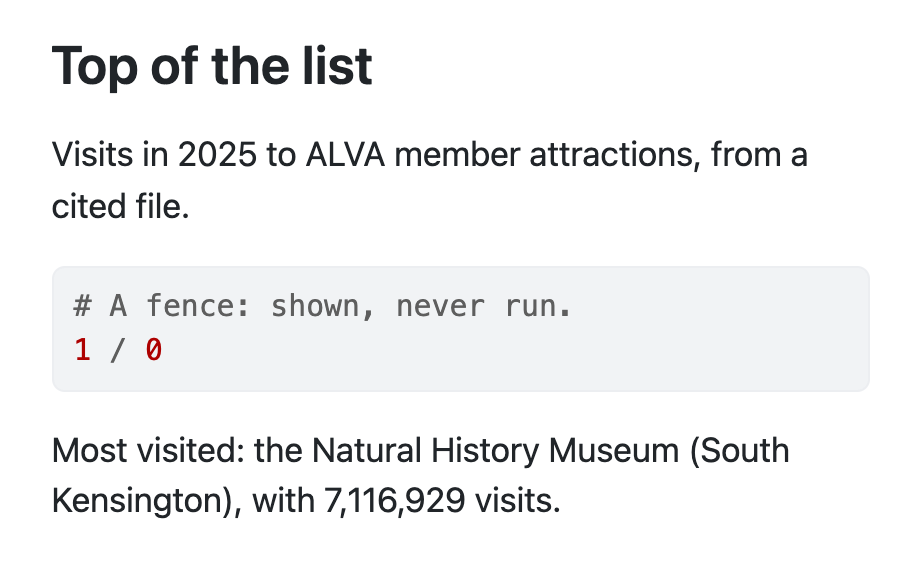
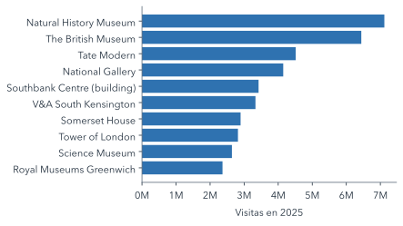
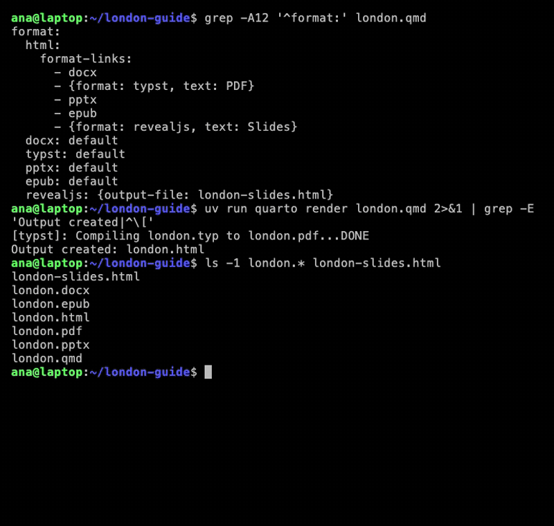

---
title: "Top of the list"
format: html
---
Visits in 2025 to ALVA member
attractions, from a cited file.
```python
# A fence: shown, never run.
1 / 0
```
```{python}
#| label: top-attraction
#| echo: false
import pandas as pd
att = pd.read_csv(
"data/attractions.csv")
top = att.loc[
att["visits_2025"].idxmax()]
visits = f"{top['visits_2025']:,}"
```
Most visited: the
`{python} top["attraction"]`,
with `{python} visits` visits.5 Documentos que calculan
Palabras clave
Quarto, publicación reproducible, asistentes de programación, Markdown, Python, EPUB, análisis de datos, k-means
En 2024, según el conteo de ALVA, la más visitada de las cinco atracciones de la guía era el British Museum, con 6,479,952 visitas; en 2025, el Natural History Museum, con 7,116,929. Una guía que decía, con palabras escritas a mano, que el British Museum es la más visitada de las cinco lo siguió diciendo después de que ALVA publicó su tabla de 2025, en cada copia, hasta que alguien se dio cuenta.
Este capítulo hace que, en cambio, la guía calcule. El código lee los datos en cada renderizado, así que una tabla nueva corrige a la vez cada oración, el gráfico que se dibuja con ella y las versiones en Word y en PDF, sin copiar a mano un solo número. Esa es la promesa central del flujo de trabajo, y el resto del libro se construye sobre ella.
En este capítulo
- Escribir un encabezado YAML que fije el bloque del título y los formatos.
- Distinguir una celda de código que se ejecuta de un bloque que solo se muestra, y explicar cómo el código en línea pone un número calculado en una oración.
- Ponerle etiqueta, pie y descripción a una figura con opciones de celda.
- Renderizar una sola fuente como HTML, Word y PDF, y decir por qué chocan los renderizados.
5.1 La anatomía de un archivo .qmd
Un archivo de Markdown solo puede decir lo que escribiste en él. Un documento de Quarto, un archivo .qmd, también puede calcular lo que dice, así que antes de que la guía se convierta en uno, aquí van sus partes. La Sección 1.2 mostró hello.qmd, el archivo de la prueba, que multiplica dos números. toy.qmd tiene las mismas partes y lee el propio archivo de datos de la guía, así que sus números son reales:
De arriba hacia abajo:
- Encabezado YAML. El bloque entre las dos líneas
---del principio contiene la configuración del documento, escrita en YAML, un formato de configuración en el que la sangría tiene significado: una opción anidada lleva dos espacios de sangría, y una sangría equivocada cambia a qué pertenece.titlele da su título a la página yformatelige la salida. - Markdown. Todo lo que está fuera de los bloques de código es el Markdown de la Sección 4.1.
- Un bloque que solo se muestra.
```pythonnombra un lenguaje, así que el código se colorea como Python, pero Quarto nunca lo ejecuta. Si lo hiciera,1 / 0detendría el renderizado. - Una celda de código.
```{python}, con el lenguaje entre llaves, es un bloque cuyo código se ejecuta cuando se renderiza el documento. Sus primeras líneas, que empiezan con#|, son opciones de celda:labelle pone nombre a la celda, yecho: falseoculta su código en la página. - Código en línea.
`{python} visits`ejecutavisitsy escribe su valor en la oración, así que el número de la oración se calcula, no se escribe a mano.
Las llaves son toda la diferencia, como resume la Tabla 5.1.
.qmd.
| Escribes | Quarto |
|---|---|
un bloque ```python |
muestra el código; nunca lo ejecuta |
una celda ```{python} |
lo ejecuta; muestra la salida, y el código salvo que diga echo: false |
`{python} visits` |
ejecuta visits; escribe su valor en la oración |
un bloque sin procesar ```{=typst} |
se lo pasa intacto a Typst; los otros formatos lo omiten (Sección 6.4) |
quarto render toy.qmd produce la Figura 5.1. El título sale del encabezado YAML. El bloque está ahí, con 1 / 0 y todo. La celda no, porque echo: false la ocultó, pero su trabajo sí: la oración nombra el Natural History Museum (South Kensington), con 7,116,929 visitas, leídas del archivo en el momento en que se renderizó la página.

quarto render toy.qmd hace con el archivo, al ancho de un teléfono: una captura de toy.html tal como lo renderiza Quarto 1.10.20.
Detente y piensa
Pones llaves alrededor del lenguaje del bloque, para que diga ```{python}, y vuelves a renderizar toy.qmd. ¿Qué pasa?
Respuesta
El renderizado se detiene. El bloque ahora es una celda, así que Quarto ejecuta 1 / 0, Python lanza un ZeroDivisionError y no se escribe ningún toy.html. La falla está en el primer paso, ejecutar (Figura 1.2): es de tu código, no del documento.
5.2 La configuración del principio: el bloque del título
Pídele a tu asistente
Cambia el nombre de london.md a london.qmd. Reemplaza el título "# Visit London" por un encabezado YAML: title "Visit London", author "London Tourism Office", date today, format html. No renderices; mi vista previa lo reconstruye.
Probablemente ejecute
cambia el nombre a london.qmd · edita el principio del archivo
Tú haces
en la pestaña de la vista previa: Ctrl+C, y luego uv run quarto preview london.qmd
La extensión .qmd le dice a Quarto que busque un encabezado YAML y celdas de código (Sección 5.1). El encabezado YAML de la guía son cuatro opciones:
- 1
-
title,authorydateforman el bloque del título, así que el viejo título# Visit Londonya no hace falta. - 2
-
todayse completa cuando se renderiza el documento. - 3
-
formatelige la salida; más adelante en este capítulo se convierte en una lista.
La página de la vista previa ahora abre con el título, el autor y la fecha de hoy.
AdvertenciaError frecuente
Borra london.md una vez que exista london.qmd. Los dos escribirían london.html, y gana el que se renderiza último, así que la página que ves puede no venir del archivo que editaste. Reinicia también la vista previa con el archivo nuevo: la anterior sigue vigilando london.md.
5.3 Números que calcula la guía
Pídele a tu asistente
En london.qmd, agrega una celda de Python que lea data/attractions.csv y encuentre la atracción más visitada y el total de visits_2025, y una oración, en inglés, que muestre los dos con código en línea. La vista previa lo vuelve a renderizar: revisa london.html.El asistente escribe una celda de código (Sección 5.1) y una oración que usa sus resultados:
```{python}
import pandas as pd
attractions = pd.read_csv("data/attractions.csv")
top = attractions.loc[attractions["visits_2025"].idxmax()]
top_name = top["attraction"]
top_visits = f"{top['visits_2025']:,}"
total_visits = f"{attractions['visits_2025'].sum():,}"
```
Most visited in 2025: the `{python} top_name`, with `{python} top_visits` visits.
London's ten most visited ALVA member attractions drew `{python} total_visits` visits.No necesitas escribir Python para revisarlo, pero sí deberías poder leerlo. La celda hace cuatro cosas:
import pandas as pdcarga pandas, el paquete para tablas, con el nombre cortopd.pd.read_csv(...)lee el archivo CSV en una tabla,attractions, con una fila por atracción.attractions["visits_2025"].idxmax()encuentra la fila con más visitas en 2025, y.loc[…]toma esa fila, así quetop["attraction"]es su nombre..sum()suma la columna, yf"{…:,}"escribe un número como texto con una coma entre los miles, listo para una oración.
Cuando se renderiza el documento, la celda se ejecuta y sus variables se conservan, así que cada pieza de código en línea, `{python} name`, se reemplaza por el valor de name. Renderizada en este libro a partir del mismo archivo de datos, la oración de la guía dice:
Most visited in 2025: the Natural History Museum (South Kensington), with 7,116,929 visits. London’s ten most visited ALVA member attractions drew 39,692,434 visits.
(Es decir: la más visitada en 2025 fue esa atracción, con esas visitas, y las diez atracciones miembro de ALVA más visitadas de Londres sumaron ese total.) Quarto 1.4 introdujo esta sintaxis en línea, una para cada motor, Python incluido; quienes usan R ya escribían código en línea con `r x` de knitr, una sintaxis que Quarto todavía admite (notas de la versión 1.4 de Quarto, consultadas el 2026-11-12).
Detente y piensa
Si cambia attractions.csv, ¿qué valores de esas dos oraciones se actualizan?
Respuesta
Los tres que se calculan: el nombre de la atracción más visitada, sus visitas y el total. Se actualizan en el siguiente renderizado, no cuando se guarda el archivo. La palabra “ten” está escrita a mano, así que nunca se actualiza: es correcta solo mientras el archivo tenga diez filas, y len(attractions) la calcularía. Cualquier cosa escrita a mano se comporta igual.
Las cifras vienen de la tabla de ALVA de las visitas que se hicieron en 2025 a sus atracciones miembro, descargada el 2026-10-30. Solo se cuentan los miembros de ALVA, y por eso la oración dice “ALVA member attractions”: las reglas del proyecto hicieron que el asistente lo escribiera así.
5.4 Un gráfico con pie de figura y texto alternativo
Pídele a tu asistente
Agrega una celda de matplotlib: un gráfico de barras horizontales de visits_2025 por attraction. Oculta su código, ponle la etiqueta fig-top10, y agrega un pie de figura y un texto alternativo. La vista previa lo vuelve a renderizar: revisa london.html.Las opciones de una celda van en sus primeras líneas, como comentarios que empiezan con #|, como el label y el echo de toy.qmd (Sección 5.1):
- 1
-
Una etiqueta que empieza con
fig-numera la figura y permite que el texto la mencione como@fig-top10, que se renderiza como “Figure 1” con un enlace. - 2
-
echo: falseoculta el código; quien lee una guía para visitantes quiere el gráfico, no el Python. - 3
- El pie de figura, que se muestra debajo de la figura.
- 4
- El texto alternativo, que leen en voz alta los lectores de pantalla.
La Figura 5.2 es ese gráfico, dibujado por este libro a partir del mismo archivo. Fíjate en que su pie y su texto alternativo describen cosas distintas: el pie dice qué es el gráfico, el texto alternativo dice qué muestra.

Matplotlib dibuja una imagen estática, así que la misma figura viaja a todos los formatos: página web, Word, PDF, diapositivas. Los gráficos interactivos, como los de Plotly, son JavaScript que se ejecuta en un navegador, así que van en páginas web y dashboards (Capítulo 6), no en un PDF.
5.5 Una sola fuente, tres formatos
Tú haces
primero: Ctrl+C en la pestaña de la vista previa, para que no choquen dos renderizados · vuelve a iniciarla después
Pídele a tu asistente
En london.qmd, agrega los formatos docx y typst (con la etiqueta "PDF") con enlaces de descarga en la página HTML. Renderiza los tres; comprueba que cada uno tenga la oración y el gráfico calculados.
Probablemente ejecute
uv run quarto render london.qmd → london.html · london.docx · london.pdf
El format del encabezado YAML se convierte en una lista:
- 1
-
format-linksagrega a la página web un enlace de descarga para cada uno de los otros formatos de la lista. - 2
- Una entrada puede ser el nombre de un formato, o un objeto con el formato y el texto del enlace.
- 3
-
typsthace el PDF con el motor Typst que viene dentro de Quarto; no interviene LaTeX.
Un solo quarto render ahora escribe tres archivos. Cada formato vuelve a ejecutar las celdas de código, así que los números en línea y la figura aparecen en cada archivo sin que se copie nada. Para renderizar un solo formato, agrega --to docx (o --to typst). Cada formato es una pasada más por los pasos de la Figura 1.2. Cuando reinicias la vista previa, la página web tiene en su margen una lista de Other Formats (otros formatos), con un enlace a cada archivo; abre desde ahí el archivo de Word y el PDF.
NotaPor qué funciona
¿Por qué ejecutar el código una vez por formato? Porque un formato puede cambiar lo que produce el código: una figura puede dibujarse con otro tamaño o resolución, y algunas salidas, como los gráficos interactivos, solo tienen sentido en HTML. Volver a ejecutar es el precio de que cada formato reciba una salida hecha para él. Para un análisis lento, el remedio es calcular una vez en un script y hacer que cada formato lea los resultados, que es exactamente como está construida la Parte III (Sección 8.6).
Detente y piensa
El gráfico de barras tiene que aparecer en el archivo de Word y en el PDF además de en la página web. ¿Por qué su prompt pide matplotlib, si el dashboard del capítulo siguiente usa Plotly?
Respuesta
Matplotlib dibuja una imagen estática, que cualquier formato puede contener. Los gráficos de Plotly son JavaScript que se ejecuta en un navegador, así que sirven para la página web y el dashboard, pero no para Word ni para un PDF.
5.6 Tres formatos más (opcional)
Pídele a tu asistente
En london.qmd, agrega los formatos pptx, epub y revealjs (london-slides.html), cada uno con un enlace de descarga en la página HTML. Renderiza todo; comprueba que cada uno tenga la oración y el gráfico calculados.
Probablemente ejecute
uv run quarto render london.qmd → seis archivos
format:
html:
format-links:
# … docx, PDF
- pptx
- epub
- {format: revealjs, text: Slides}
pptx: default
epub: default
1 revealjs: {output-file: london-slides.html}- 1
-
Las diapositivas de Reveal.js también son HTML, así que necesitan un nombre de archivo propio, o sobrescribirían
london.html.
En PowerPoint y en Reveal.js, cada título ## se convierte en una diapositiva. El EPUB es un libro electrónico: ábrelo en un lector de libros electrónicos como Calibre (gratuito, para Windows, macOS y Linux) o Libros en una Mac. La edición EPUB de este libro se construye de la misma manera, con más opciones, que describe el Apéndice H. La Figura 5.3 muestra el renderizado.

format de london.qmd, un renderizado que ejecuta el código una vez por formato y las salidas que escribió. Una grabación real con una cuenta de demostración; se cortó la parte del medio del renderizado.
5.7 Qué hace un renderizado, y por qué chocan dos renderizados
La Figura 1.2 de la Sección 1.2 mostró los tres pasos de un renderizado. Con código en el documento, vale la pena mirar el primer paso más de cerca, porque explica la falla más común de este capítulo.
Para ejecutar las celdas, Quarto escribe el documento como un cuaderno de Jupyter temporal, con el nombre del archivo (london.quarto_ipynb), inicia un kernel de Python (un proceso de Python en ejecución) desde el entorno del proyecto, le envía cada celda en orden y recoge los resultados. De ahí salen dos consecuencias. Las celdas comparten una sola sesión de Python, de arriba hacia abajo, así que una celda posterior puede usar una variable de una anterior, y el orden de las celdas importa. Y dos renderizados del mismo archivo en el mismo momento escriben los mismos archivos temporales, por eso un renderizado que empieza mientras una vista previa está renderizando de nuevo falla con readfile 'london.quarto_ipynb'.
Cada renderizado vuelve a ejecutar todas las celdas. Ese es el comportamiento por defecto de Quarto (freeze: false), y los proyectos de este libro lo conservan a propósito, para que las salidas siempre coincidan con los datos. También significa que una celda lenta hace lento cada renderizado; el Capítulo 14 vuelve sobre esa disyuntiva y sobre freeze: auto, que guarda los resultados en caché y necesita una regla para saber cuándo descartarlos.
Cada renderizado también imprime la advertencia inofensiva de IPKernelApp que describe la Sección 3.7.
Detente y piensa
Una celda posterior usa attractions, que crea una celda anterior. Mueves la celda posterior por encima de la anterior. ¿Qué pasa en el siguiente renderizado?
Respuesta
Falla con un NameError: las celdas se ejecutan de arriba hacia abajo en una sola sesión de Python, así que attractions todavía no existe cuando se ejecuta la celda que moviste.
Resumen
- Un archivo
.qmdes un encabezado YAML, Markdown y celdas de código; solo se ejecuta un bloque cuyo lenguaje está entre llaves. - Las celdas se ejecutan al renderizar, de arriba hacia abajo, en una sola sesión de Python.
- El código en línea pone resultados en las oraciones, así que siguen a los datos; las palabras escritas a mano, no.
- El pie de figura dice qué es una figura; el texto alternativo, qué muestra.
- Cada formato vuelve a ejecutar el código, y dos renderizados de un mismo archivo a la vez chocan.
Pero cada uno de esos formatos sigue siendo la guía para visitantes. La oficina de turismo tiene otros lectores (la gerencia, los socios y quienes entran de la calle), y el capítulo siguiente escribe un documento para cada uno de ellos a la vez.
Lecturas adicionales
- Quarto, Front Matter y Execution Options (consultados el 2026-11-12).
- Quarto, Inline Code y las notas de la versión 1.4 (consultados el 2026-10-30 y el 2026-11-12).
- Quarto, Cross References (consultado el 2026-11-12).
- Quarto, HTML with multiple formats, Typst, PowerPoint, Reveal.js y EPUB options (consultados el 2026-10-30 y el 2026-11-12).
- Quarto, Jupyter Widgets: cuándo funcionan los gráficos interactivos (consultado el 2026-10-30).